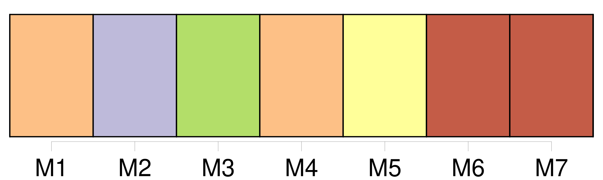
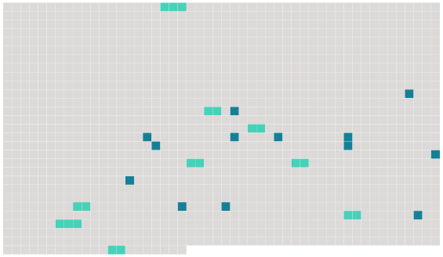

Longueur nb maillons : 22 mentions |
 |
» [13 phrases] L'Isabelle, donna [Sérafina] , et même la soubrette, lui troublaient doucement l'imagination et lui faisaient l'effet plutôt de divinités descendues sur la terre que de simples mortelles. [2 phrases] Le Baron donna la main à [donna Sérafina] , [qu'] il fit asseoir à sa droite. [3 phrases] [La Sérafina] était une jeune femme de vingt-quatre à vingt-cinq ans, à qui l'habitude de jouer les grandes coquettes avait donné l'air du monde et autant de manège qu'à une dame de cour. [Sa] figure, d'un ovale un peu allongé, [son] nez légèrement aquilin, [ses] yeux gris à fleur de tête, [sa] bouche rouge, dont la lèvre inférieure était coupée par une petite raie, comme celle d'Anne d'Autriche, et ressemblait à une cerise, [lui] composaient une physionomie avenante et noble à laquelle contribuaient encore deux cascades de cheveux châtains descendant par ondes au long de [ses] joues, où l'animation et la chaleur avaient fait paraître de jolies couleurs roses. [1 phrases]
[Son] chapeau de feutre à bord rond, orné de plumes dont la dernière se contournait en panache sur les épaules de [la dame] et les autres se recroquevillaient en bouillons, coiffait cavalièrement [la Sérafina] ; un col d'homme rabattu, garni d'un point d'Alençon et noué d'une bouffette noire, de même que les moustaches, s'étalait sur une robe de velours vert à manches crevées, relevées d'aiguillettes et de brandebourgs, et dont l'ouverture laissait bouillonner le linge ; une écharpe de soie blanche, posée en bandoulière, achevait de donner à cette mise un air galant et décidé. Ainsi attifée, [Sérafina] avait une mine de Penthésilée et de Marphise très-propre aux aventures et aux comédies de cape et d'épée. [1 phrases] Ces petites misères de détail n'empêchaient pas [donna Sérafina] d'avoir un port de reine sans royaume. Si [son] habit était fané, [sa] figure était fraîche, et, d'ailleurs, cette mise paraissait la plus éblouissante du monde au jeune baron de Sigognac, peu habitué à de pareilles magnificences, et qui n'avait jamais vu que des paysannes vêtues d'une jupe de bure et d'une cape de calmande.
Il était, du reste, trop occupé des yeux de [la belle] pour faire attention aux éraillures de [son] costume. L'Isabelle était plus jeune que [la donna Sérafina] , ainsi que l'exigeait son emploi d'ingénue ; elle ne poussait pas non plus aussi loin la braverie du costume et se bornait à une élégante et bourgeoise simplicité, comme il convient à la fille de Cassandre. [1 phrases] Un corsage de taffetas gris, agrémenté de velours noir et de jais, s'allongeait en pointe sur une jupe de même couleur ; une fraise, légèrement empesée, se dressait derrière sa jolie nuque où se tordaient de petites boucles de cheveux follets, et un fil de perles fausses entourait son col ; quoiqu'au premier abord elle attirât moins l'œil que [la Sérafina] , elle le retenait plus longtemps. |
 |
Il est possible de télécharger la ressource sur la page Ortolang |
Si vous avez des questions ou vous voyez des erreurs, merci d'envoyer un mail à silvia.federzoni89@gmail.com |